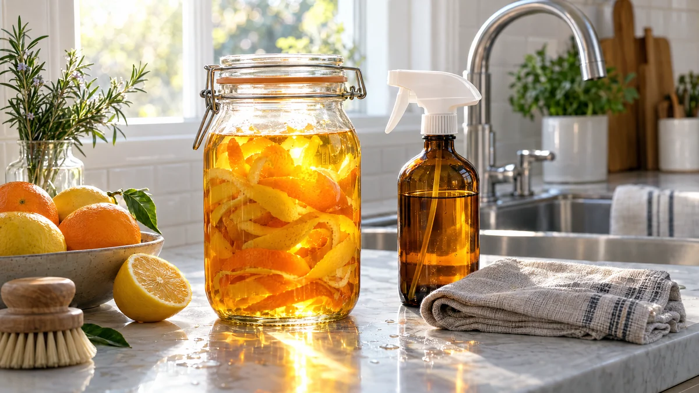

RESTFEST · HUSHÅLL & STÄD
Allrengöringsspray på citrusskal och ättika
Skalen från veckans apelsiner och citroner får dra i en burk ättika tills vätskan blir gyllene och doftar citrus i stället för vinäger. Utspädd i en sprayflaska blir den en allrengöring som får kakel, kranar och glas att blänka. Det du brukar slänga blir det du städar med.
- Förberedelse
- 10 min + 1–2 veckors dragtid
- Verkningstid
- 1 min
- Räcker till
- ca 1½ liter spray
- Nivå
- Nybörjare
Bra att veta. Märk alltid flaskor och burkar tydligt och förvara dem utom räckhåll för barn. Blanda aldrig hemgjorda rengöringsmedel med klorin eller andra köpta medel, ättika och klorin bildar en giftig gas.
 Det här behöver du
Det här behöver du
Tryck på + vid det du behöver köpa.
Gör så här
- Spara citrusskalen i en påse i frysen tills du har tillräckligt.
- Lägg skalen i glasburken och häll över ättikan så att de täcks. Skruva på locket.
- Låt burken stå svalt och mörkt i 1–2 veckor. Skaka den då och då.
- Sila bort skalen. Den gyllene citrusättikan håller i flera månader i burken.
- Häll 1 del citrusättika och 2 delar vatten i sprayflaskan.
- Spraya på ytan, låt verka i 1 minut och torka av med en fuktig trasa. På glas och speglar, eftertorka med en torr mikrofiberduk.
Presentation och användning
- Häll citrusättikan i en hög glasflaska med en remsa apelsinskal kvar i, och ställ den på en hylla i städskåpet.
- Använd sprayen på kakel, kranar, rostfria diskbänkar, laminat, glas, speglar och i kylskåpet.
- På kalkfläckar i duschen, spraya outspädd citrusättika och låt verka i 10 minuter innan du torkar av.
- Ättiksdoften försvinner när ytan har torkat.
Bra att veta
- Använd inte sprayen på marmor, kalksten, granit eller annan natursten, och inte på oljat eller vaxat trä. Ättikan fräter på ytan.
- Prova alltid på en dold yta först.
- Blanda aldrig med klorin.
- Undvik att spraya mot ansiktet, och vädra om du städar i ett litet rum.